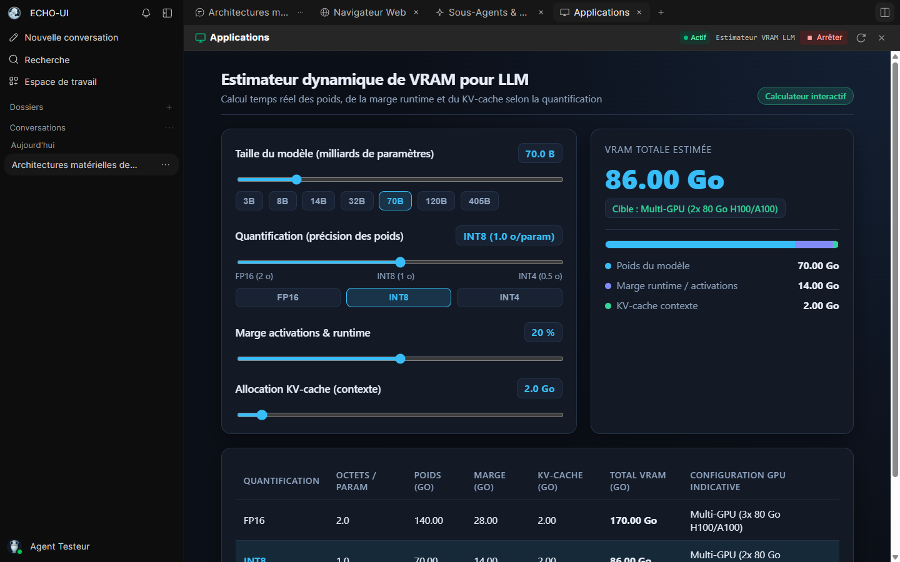
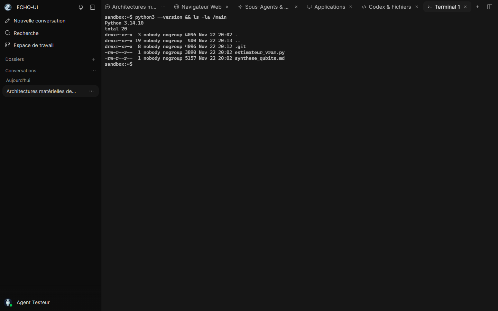
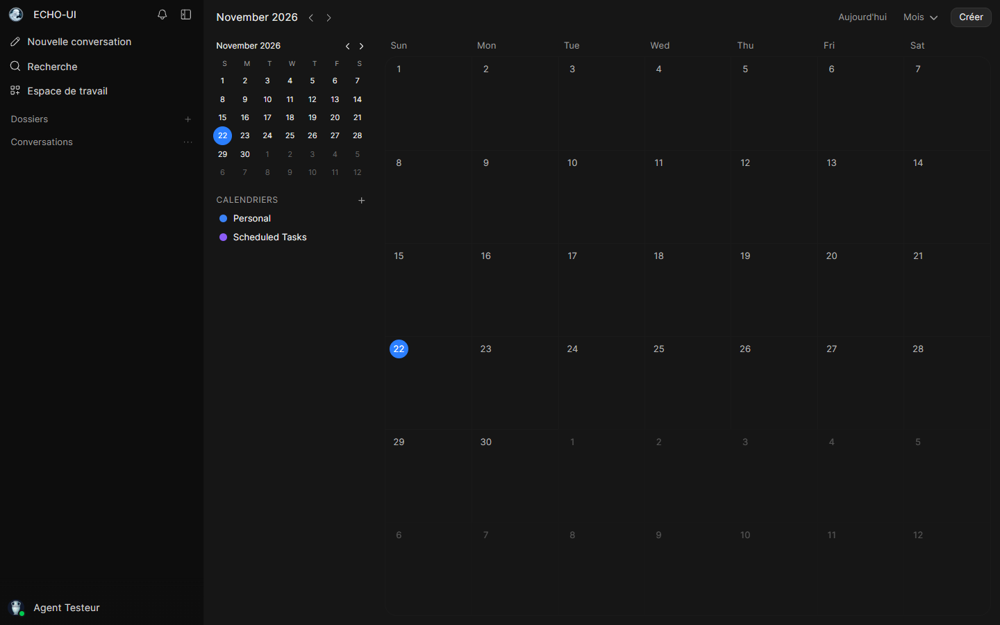
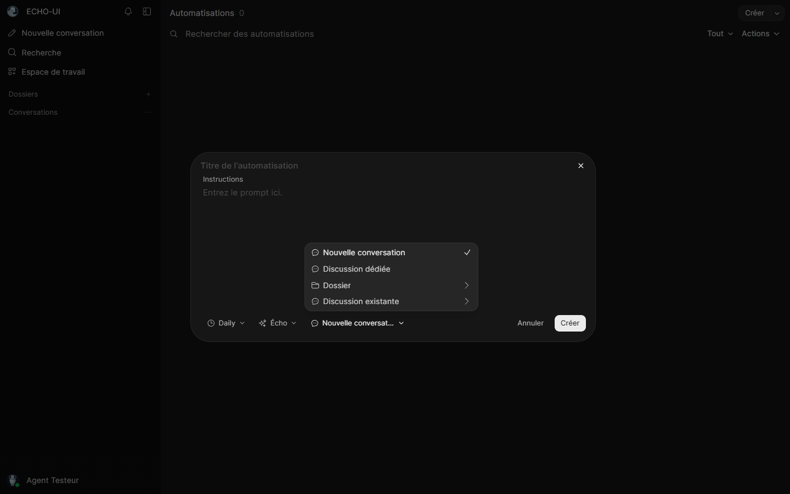

10. Planification & Exécution
Passer de l'intention à l'exécution contrôlée
Lorsque vous confiez à ECHO un projet structuré, une analyse de données nécessitant du calcul réel, une application interactive ou une tâche récurrente, quatre mécanismes prennent le relais : la planification stratégique validée, la zone d'exécution isolée (Sandbox), l'agenda intégré et les automatisations programmées.
1. Planification stratégique et suivi des tâches
Pour les chantiers en plusieurs étapes, ECHO sépare la réflexion stratégique de l'exécution concrète. Un plan est d'abord rédigé dans un espace dédié (plans), soumis à votre lecture, puis exécuté étape par étape avec pointage en temps réel d'une liste de tâches associée.
| Étape du cycle | Comportement dans ECHO-UI | Effet pour l'utilisateur |
|---|---|---|
| 1. Proposition | Rédaction de la stratégie et de la liste de tâches initiale dans l'espace plans. |
Vous examinez la feuille de route complète avant qu'aucune modification de fond ne démarre. |
| 2. Audit & Ajustement | Relecture critique préalable et révision de la stratégie tant que le plan est en attente. | Détection des oublis, dépendances ou contraintes manquantes avant le lancement. |
| 3. Approbation & Lancement | Boîte de confirmation interactive pour autoriser le passage en exécution. | Verrouillage de la stratégie approuvée ; aucune dérive silencieuse en cours de route. |
| 4. Pointage & Clôture | Mise à jour continue des cases à cocher puis rédaction d'une synthèse finale datée. | Traçabilité exacte de ce qui a réussi, échoué, été ignoré ou abandonné. |
Suivi léger vs Plan stratégique
Pour une demande courante de quelques étapes au sein d'un même tour, l'assistant affiche une simple liste de contrôle visuelle dans la conversation. Le planificateur complet est réservé aux projets durables devant survivre à plusieurs tours et conserver un historique versionné.
2. Zone d'exécution sécurisée, Applications et Terminal
L'assistant dispose d'un environnement d'exécution cloisonné capable d'exécuter des scripts Python, JavaScript et Bash, d'installer des bibliothèques à la volée et de lire (sans pouvoir les altérer) vos fichiers déposés, documents Codex ou captures de navigation.
Scripts & Traitements batch
Calculs scientifiques, conversion de fichiers volumineux, génération de PDF, nettoyage de données CSV ou tests automatisés. Les livrables validés peuvent ensuite être promus vers votre espace principal du Codex.
Onglet Applications en direct
L'assistant peut afficher dans l'onglet Applications soit une vue HTML statique (tableau de bord, rapport interactif), soit une véritable application web client-serveur dotée d'API et de mises à jour en temps réel, accessible uniquement pendant votre session.
Terminal interactif & SSH
Dès qu'une conversation est enregistrée, vous pouvez ouvrir un terminal shell interactif depuis le menu
+ (Nouveau terminal). Pour administrer un serveur distant, l'assistant utilise
les alias configurés dans Coffre & Identité sans jamais exposer vos mots de passe ou clés
privées dans le chat.

Onglet Applications : exécution en direct de l'application web interactive Estimateur dynamique de VRAM pour LLM (statut Actif et contrôle d'arrêt immédiat).

Onglet Terminal 1 : session shell interactive connectée à l'environnement confiné sous Python 3.14.10 avec accès en lecture aux livrables de la conversation.
Règle de confidentialité pour les accès distants
Ne collez jamais un mot de passe ou une clé privée SSH dans la zone de saisie d'une conversation. Enregistrez vos accès dans l'onglet Coffre & Identité : l'assistant ne voit que le nom de l'alias et sa description, jamais le secret déchiffré.
3. Agenda et Automatisations planifiées
ECHO intègre directement un Calendrier et un gestionnaire d'Automatisations accessibles depuis la barre latérale gauche. L'assistant peut consulter vos disponibilités, créer ou modifier des rendez-vous avec rappels, et programmer des missions autonomes récurrentes (quotidiennes, hebdomadaires, horaires ou ponctuelles).

Vue de l'agenda intégré accessible depuis la barre latérale gauche d'ECHO-UI.
Lors de la création d'une automatisation (ou depuis le menu contextuel ... d'une conversation),
trois modes de destination permettent de choisir où apparaîtront les résultats :
- Nouvelle conversation : crée un fil distinct dans le dossier cible à chaque exécution.
- Conversation existante : ajoute les comptes rendus périodiques à la suite d'une discussion déjà ouverte.
- Conversation dédiée réutilisée : crée une conversation unique au premier déclenchement puis y regroupe tous les passages suivants.

Configuration d'une automatisation planifiée et choix de sa conversation cible.
Dossier d'Ingénierie : Planificateur Git, Sandbox Bubblewrap, CanvasRunHub IPC & Automatisations RRULE
1. Planification Stratégique (strategic_planner.py v6.23.10.1)
- Surface d'outils (8 méthodes) :
build_plan(MODEL_PROMETHEUS,override_thinking="high"),read_plan,update_plan,update_tasks(MODEL_APOLLO),process_plan,close_plan(déterministe zéro-LLM),delete_plan,analyze_plan(MODEL_PROMETHEUS,override_thinking="high"). - Stockage & Concurrence : Génère deux fichiers couplés dans le workspace Git dédié
CODEX_WORKSPACE_PLANS("plans") :{plan_id}_{slug}.md(avec suffixe UUID anti-collision) ettasks_{plan_id}_{slug}.md, indexés dansecho_resources(storage_path="codex/plans/{filename}") sous le verrou asynchrone partagéget_codex_lock(user_id, chat_id). - Machine à états & Gatekeepers : Transitions autorisées
proposed→executing(uniquement viaprocess_plan; bloqué en contexte headless/automatisation siuser_already_validated=Falseviaget_headless_block_reason) etexecuting→success | partial | failed | abandoned(ouproposed→abandoned) uniquement viaclose_planavec écriture idempotente de## Synthèse d'exécution. Codification tactique stricte des tâches :[ ],[/],[x],[!],[-].
2. Sandbox d'Exécution & Terminal PTY (code_executor_tool.py v6.24.6.1 & 21-docker-coding-worker)
- Confinement Bubblewrap (
worker_api.pyv6.24.6.1) : Exécution ASGI/WSGI hybride (Starlette + Flask +uvicornsur port5000, Python 3.14, Node.js 22.x LTS, Bash avec pré-validationbash -n). Isolation par namespaces (--unshare-user --uid 65534 --gid 65534,--unshare-ipc,--unshare-uts,--unshare-cgroup,--die-with-parent),/sandboxen RW, montages RO stricts de/main,/plans,/generated,/files,/browserviewset/echo_libs_sandbox, et dépendances dynamiquespip/npmdans/.depssous verrou_get_session_deps_lock. - Quotas, Isolation & Contrôle : Isolation des jobs par
(uid, cid, sub_sid)viaECHO_SUBAGENT_CONTEXT; maximum 4 jobs par chat et 8 jobs globaux sur le Worker. Modesbackground=False(synchrone,timeout_secmax3600s, garde pré-vol bloquantecho_monitor.expose_app()) etbackground=True(GET /wait_readyjusqu'àECHO_CANVAS_READY_TIMEOUT_SEC = 8.0s,idle_ttl_sec = 1800s,max_lifetime_sec = 14400s). Pilotage incrémental viacontrol_sandbox_execution(action="status"|"listen"|"kill"). - Bus IPC
CanvasRunHub&echo_monitor(v6.17.4.1) : Serveur Socket UnixAF_UNIX(/tmp/echo_ipc/{safe_rid}/ipc.sockmonté sur/run/echo_ipc.sock) avec framing binaire[uint32 BE meta_len][uint32 BE bin_len][UTF-8 JSON meta][raw bin]. Pattern Aecho_monitor.display()(modesrcdoc) vs Pattern Becho_monitor.expose_app()(écoute sur/run/echo_app/http.sockou port TCP éphémère vérifié par_verify_job_owns_tcp_port, proxy interne/app_proxy/{run_id}+/ws/app/{run_id}). Relais versEchoCanvasTab.sveltevia webhook HMACPOST /echo/v1/wm/internal/sandbox_eventet proxy HTTP/WS sans cookie SSO par capability ticket HMAC/echo/v1/wm/app/{ticket}(routers/wm.pyv6.17.4.1, avec shim HTML et polyfill RAMlocalStorage/sessionStorageface à l'origine nulle). - SSH & Terminal PTY :
manage_terminal(actionsexec,open,list,read,write,close) unifie l'exécution SSH one-shot (POST /ssh) et les sessions PTY interactives Local/SSH (/api/terminals*etWS /api/terminals/{session_id}) sousbwrapéphémère, avec clé privée (chmod 0o600), certificat OpenSSH (CertificateFile),sshpassdéchiffrés côté serveur depuis l'Identity Vault (service="ssh"), verrou serveuragent_locked(rejet HTTP423 Lockeden lecture seule), PTYpreexec_fn(os.setsid()+TIOCSCTTY), buffer circulaire 64 Ko,EchoTerminalHeader.svelteetXTerminal.svelte.
3. Agenda & Automatisations CRON (generalist_tools.py v6.24.1.1)
- Calendrier UI : Outil unifié
manage_ui_calendar(actionslist,read,create,update,delete) opérant directement sur la tablecalendardewebui.dbavec dates ISO 8601 alignées surAEC_temporalite. - Automatisations RRULE : Outil unifié
manage_ui_automations(actionslist,read,create,update,toggle,delete) imposant la syntaxe iCalendar RFC 5545 (clauseDTSTART:YYYYMMDDTHHMMSSrequise avecCOUNT), forçant le modèle cible surOWUI_ORCHESTRATOR_MODEL(echo_orchestrator), et gérant les 3 modesnew_chat,existing_chat(target_chat_id="current") etpersistent_chatavec file d'attente anti-chevauchement (coalescing) plafonnée àECHO_AUTOMATION_QUEUE_MAX_WAIT_SEC = 10800s(3 heures).